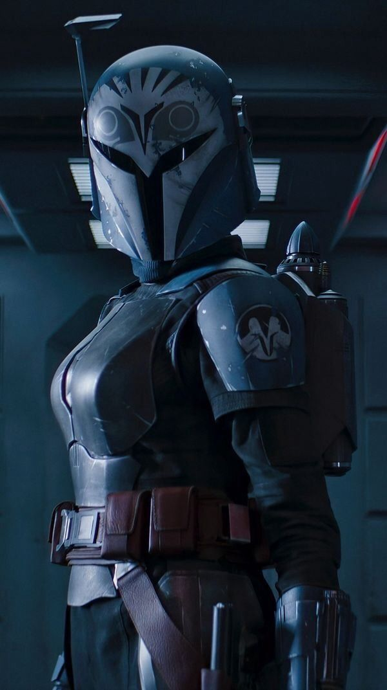

Bo-Katan Kryze

{kind=link}
Bo-Katan Kryze était une humaine Mandalorienne qui vécut sous la République Galactique, l'Empire Galactique et plus tard la Nouvelle République. Au cours de ces longues décennies, elle dirigea le peuple Mandalorien face à ses nombreux ennemis et elle participa à deux conflits galactiques : la Guerre des Clones et la Guerre Civile Galactique.
Née sous l'Ère Républicaine, Bo-Katan Kryze était la petite sœur de Satine Kryze, l'héritière de son clan et la Duchesse de Mandalore. Sous le règne de sa sœur, Mandalore s'éloigna de ses origines guerrières pour mener une politique pacifiste, désapprouvée par Kryze. Dû à ce changement drastique, les deux sœurs entrèrent en conflit, et la benjamine choisit de quitter son aînée pour rejoindre les Death Watch ; un groupe terroriste de Mandaloriens. Au sein de cette organisation, elle devint rapidement le meilleur élément de leur chef Pre Vizsla et elle essaya de ramener son peuple à sa tradition guerrière.Vers la fin de la Guerre des Clones, Kryze rencontra le Seigneur Sith renégat Maul, cherchant à prendre le pouvoir dans la Bordure Extérieure. Elle et son clan s'allièrent au Zabrak, qui leur promit de leur offrir Mandalore en échange de leur soutien militaire. Sous ses ordres, elle attaqua plusieurs syndicats du crime, avant d'effectuer un coup d'état sur sa planète. Le gouvernement de sa sœur fut renversé et Vizsla tenta de prendre le pouvoir. Malheureusement, le guerrier fut tué par Maul, qui en profita pour voler le trône, diviser les Death Watch et assassiner la Duchesse. Seule face au Zabrak, Kryze organisa la résistance.
Les mois s'enchaînèrent et la guerrière rassembla des alliés. Notamment, elle rallia l'ancienne Jedi Ahsoka Tano à sa cause. De nombreuses missions furent effectuées et le duo réussit à affaiblir le Collectif des Ombres, dirigé par Maul. Puis, le Siège de Mandalore eut lieu. Ayant réussi à obtenir le soutien de la République, Kryze et Tano livrèrent un dur combat contre Maul et le Clan Saxon, avant d'emporter la victoire. Enfin, la Mandalorienne obtint le pouvoir sur sa planète, promettant d'améliorer le sort de son peuple.
 Toutefois, son règne fut très court. La Guerre des Clones prit fin et
l'Empire Galactique installa une dictature sur Mandalore. Le Clan Saxon
reprit le pouvoir et il fit régner la terreur impériale sur cette planète.
Forcée de se cacher, Kryze organisa en secret une nouvelle résistance,
attendant des jours meilleurs.
Toutefois, son règne fut très court. La Guerre des Clones prit fin et
l'Empire Galactique installa une dictature sur Mandalore. Le Clan Saxon
reprit le pouvoir et il fit régner la terreur impériale sur cette planète.
Forcée de se cacher, Kryze organisa en secret une nouvelle résistance,
attendant des jours meilleurs.
Des années plus tard, elle rencontra la cellule rebelle Phoenix et Sabine Wren, qui l'aidèrent à reprendre le pouvoir légitime sur Mandalore. Ensemble, ils affrontèrent Gar Saxon et l'Empire Galactique, avant de finalement libérer son peuple. Enfin, Kryze retrouva le sabre noir et elle put réunifier ses semblables, devenant la première Mand'alor depuis Pre Vizsla.
Mais une fois de plus, la paix fut brisée. Au cours de la Guerre Civile Galactique, l'Empire mena le génocide des Mandaloriens, massacrant la quasi-entièreté de ce peuple. Kryze survécut, seulement pour devoir à nouveau se cacher. Une décennie plus tard, sous la Nouvelle République, l'ancienne Mand'alor était à la poursuite du Moff Gideon, en possession du sabre noir. Pendant cette période, elle rencontra le Mandalorien Din Djarin, gardien de Grogu. Le chasseur de primes lui offrit une opportunité en or de récupérer le sabre noir. Alliée au Mandalorien et d'autres mercenaires, elle attaqua le croiseur de Gideon. Malheureusement, Djarin commit l'erreur d'hériter du sabre noir en affrontant le Moff. En accord avec la tradition, Kryze ne put reprendre l'arme ancestrale.